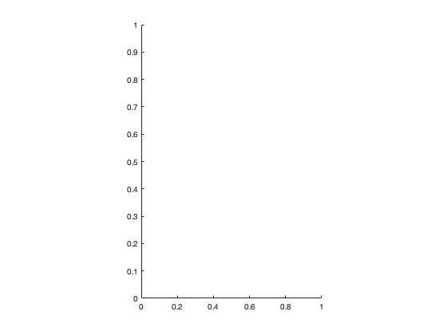
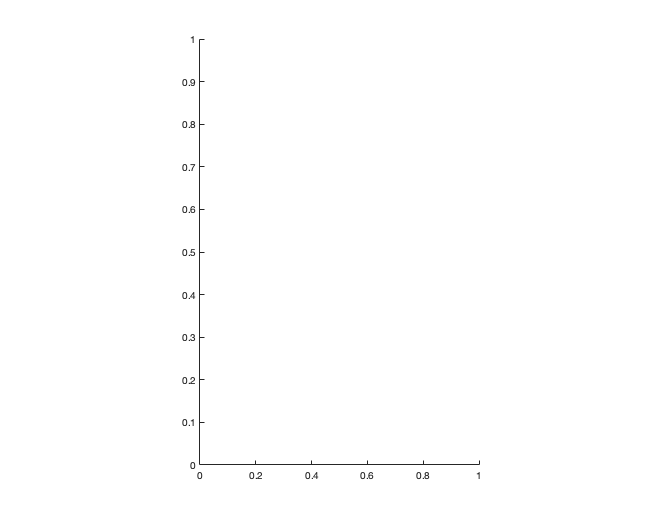
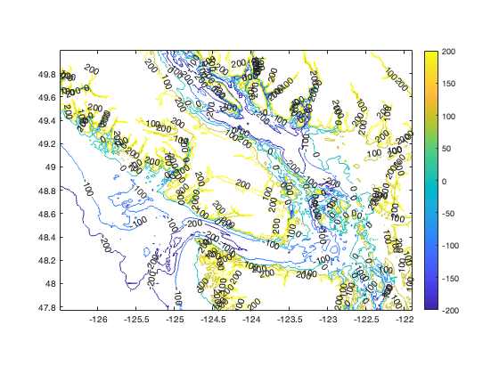

Lab 5: Setting the Stage Regional Conditions, Part 2
Contents
Last edited Oct 2024
Objectives
Today, we will continue to learn about MATLAB while also looking at the regional conditions surrounding our cruise area. We'll learn how to make one kind of map and start playing with lots of colour!
Review commands in today's lab: find
New commands in today's lab: * pcolor, contour, caxis, colorbar, hold, text * Use of colormaps * Setting the path (making the /common directory visible to MATLAB)
1. Geography of the Area - Bathymetry
What about the bathymetry? We've all seen the map in the lab... but could you produce your own?
Here we will examine a few ways of looking at 2-D data. We start with bathymetry because most people have seen plots like this before. One caveat, we will not use a real geographic projection here. For now, we just want to see how to visualize 2-D data.
clear
load BCregion_sm.mat
Have a look at the data contained in BCregion.mat. Your workspace now has a three variables z, lat, and lon. Notice that all three variables are 2-dimensional arrays.
Use the pcolor() command to visualize the data. Don't forget axis labels. Also, add a colorbar(). Use help pcolor to see how to use the command - you'll need three variables: x, y, and z. In this case, our x values will be longitudes, our y values latitudes, and the z values are the elevations.
figure(1);clf % You will need to call |shading flat| to get rid of the black lines % covering your plot: shading flat %shading interp also works here % Also, because this isn't actually a map, we need to fix the aspect ratio % to look more like a geographic projection. Use the following line in ALL % your map plots: set(gca, 'dataaspectRatio', [1 cos(49*pi/180) 1]) % use this command on all your map plots!
You can define what colours are used to display the data. If you don't specify, MATLAB uses the default colormap "jet", usage: colormap(jet)
Those colours are pretty funky for bathymetry. We can change colormaps with the colormap() command. The default colormap is jet. What does flipup do?
colormap(flipud(jet))
Play with some others. They are in the "common" directory in your MATLAB folder. MATLAB should know how to find that directory (it's in the path), so to use them, you just have to type in the name as in the examples above. If the common directory is greyed out in the directory listing, right click on it and select "add to path".
Jody wrote one called seajmk3 that is fairly good for ocean plots... colormap(seajmk3)
Also, you can change the limits of the color axis, to help zoom in on the areas of interest:
caxis([-500 0]); % what depth range does this emphasize?
By carefully working with colormaps and the caxis command, you can show just the part of the data set that you are intertested in!
Another way to look at the data - use the contour command. Contour takes 3 arguments, lon,lat, and z. Remember to add a colorbar.
figure(2); clf
set(gca,'dataaspectratio',[1 cos(49*pi/180) 1])
 You could specify what contours to use. You can put in a 4th argument to specify the contour intervals, but MAKE SURE you read the help information for how to use contour! Calculating contour intervals is very time-consuming and will bog down your computer! Remember to add a colorbar. You could also add labels to your contours, using the command clabel.
v=[-200 -100 0 100 200]; %make a matrix of the contours you want figure(3); clf [C,h]=contour(lon,lat,z, v); set(gca,'dataaspectratio',[1 cos(49*pi/180) 1]) clabel(C,h) colorbar
2. What if we only want the area where the cruise took place?
We need to zoom in on Saanich Inlet. To do so, we can use the find command to find all the data points in the dataset that correspond to certain conditions. find will find the indicies of the data - that is, it finds the data's "place in its array".
What are the bounds of the area we want to map? Latitude? Longitude?
See if you can figure out the find commands and the relational operators you need to take a subset of the BCregion_sm data set.
Put your commands here that will take a subset of the data:
Now use pcolor() to produce a bathymetric map of Saanich Inlet. figure(4);clf;
shading flat
% Can you figure out a way to outline the coast a bit better? You could do % it with the data set we have using the contour command. Another option is % in another data set - SViCoast.mat. See if you can figure out how to use % the variable |ncst| and the |plot| command. hold on % %don't forget axis lables, title, and a colorbar.
3. Overlay two data sets on one plot using hold
Can you figure out a way to add a text label to the figure (using code, not the text box overlay function on the figure editor window!)?
If you try to add another data set to a figure, you'll overwrite what's already there. So you need the hold command. Just put the command hold on after your first plot command, then put your second.
The plot we have made above using pcolor is a defined x-y space, with x being longitude and y being latitude. We have used plot to put data onto an x-y space before... so you could try overlaying a plot command on top of this map. You will need the hold command. However, plot only uses symbols... what about text? Guess what? The function you want is text. Type help text to see how this function works.
text(-123.4, 48.2, 'Hello')
You could add the stations we visited to your bathymetry plot, making it into a map of our study area. The station locations from our 202409 cruise are available in StationLocation.mat
%
Lab 5 Assignment
Hand in 1 file named Lab5CodeYourLastName.m containing the code to generate the figures listed below, and a comment under your code to answer Q1. Make sure that your code will run (and use the data files that I have given you, so that I have them too!).
Two figures, using appropriate colormaps, labels, captions, etc:
1. Close up of the bathymetry and topography of our study area (Saanich Inlet, Satellite Channel, Haro Strait). Use find to limit the data in BCregion_sm.mat and plot only the data you need for your close up plot. This map must show the stations we visited on our 18 and 25 Sep 2024 cruises.
2. Regional map, to put the location of Saanich Inlet into context. You should limit the data in this plot too, to include only the areas you are likely to reference in your final project. Do you need the deep Pacific? Or merely Juan de Fuca Strait?
Q1: Write a description of the geography of the study area, referring to features you see in your figures and that you think might play a role in controlling the oceanography of the Saanich Inlet area. Be specific in your description, being sure to reference approximate values (depths/elevations).
NOTE:
You will be marked on 1) your answers to the questions; 2) your ability to follow directions; and 3) the elegance of your code. Keep things neat and organized. Use % to make comment lines to explain what you are doing. Use the semicolon ; after commands to supress unnecessary output. Make sure you follow the file name conventions I've asked for.
You need to submit 1 file to the dropbox on Brightspace:
- Lab5CodeYourlastname.m with your code and answer to Q1
. . .
Last compiled on:
datestr(now)
ans =
'15-Oct-2024 14:41:00'